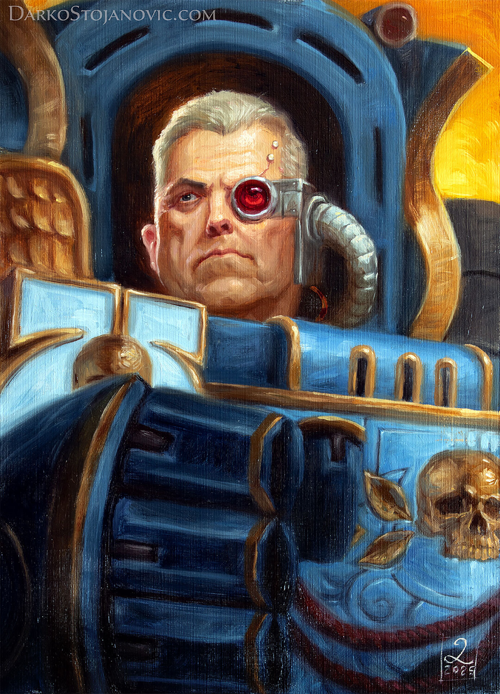
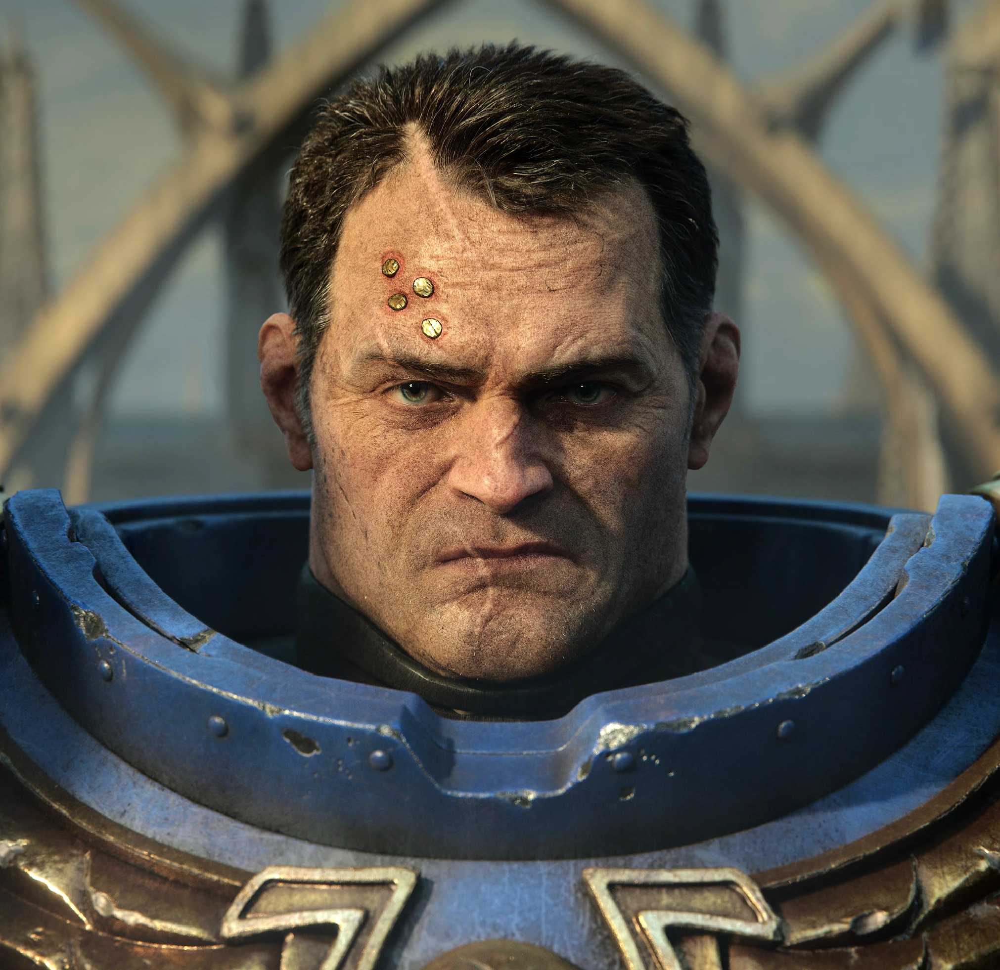

Sons who carry the Chapter's present-day name

Marneus Calgar
Second only to Guilliman in the Chapter's own legend, Calgar has led the Ultramarines through centuries of war, including the Battle for Macragge against Hive Fleet Behemoth. When Guilliman awoke, he confirmed Calgar as Chapter Master rather than displacing him.

Demetrian Titus
Once captain of the Ultramarines 2nd Company, Titus was stripped of rank and condemned after exposure to Chaos corruption during the Graia campaign. He then spent decades proving his loyalty in the Deathwatch. Restored as a Primaris lieutenant, he is the protagonist of Warhammer 40,000: Space Marine and its sequel.
Cato Sicarius
Captain of the 2nd Company and Knight Champion of Macragge, famed for aggressive, decisive victories, and for an arrogance that occasionally puts him at odds with his own brothers.
Uriel Ventris
Captain of the 4th Company, known for interpreting the Codex Astartes rather than following it to the letter when circumstances demand it. The habit has both saved his company and drawn censure from his Chapter.
Varro Tigurius
Chief Librarian of the Ultramarines, one of the most powerful psykers in the Chapter's history, valued for tactical foresight as much as raw psychic strength.
Telion
A veteran scout sergeant renowned as one of the finest marksmen in the Chapter, credited with training generations of Ultramarines scouts in the art of the long kill.